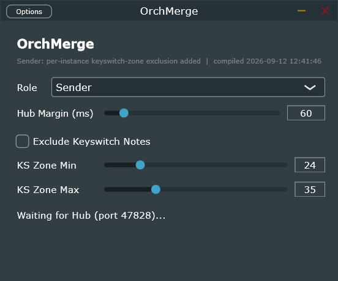

N-to-1 note merge — Bitwig has no reliable native way to do this, so this pair does it instead.
feeds OrchPiano's ReducebuildingOmrg
OrchPiano's Reduce mode needs to see every orchestral track's notes at once. OrchMerge is a Sender/Hub pair —
drop a Sender on every track (transparent pass-through, never alters that track's own signal), one Hub on
OrchPiano's own input, and the Hub emits one genuinely merged stream.
Not fully settled yet. A phantom-note bug (an idle Sender with no clip on its track was
confirmed transmitting a real note to the Hub) is a known, open, unroot-caused issue — see the project's own
notes before trusting a take with an idle Sender in the rig. Phase 3's jitter-absorbing emit buffer is built
and code-reviewed but not yet confirmed live. This guide documents the real controls as they exist now, not a
claim that the plugin is finished.
01
The Editor
One instance, one Role choice — everything below it applies conditionally depending which role is picked.

1
2
3
4
5
6
1
Rolerole
Sender · Hub
Defaults to Sender — safe to drop on a track before any Hub exists, since a Sender only ever tries to connect out, never binds anything. Exactly one instance in the whole rig should be Hub.
default: Sender
2
Hub Margin (ms)hubMarginMs
10–500
Hub role only: wall-clock slack held before placing an emitted event, absorbing ordinary Sender-to-Hub relay jitter so a genuine cross-instrument unison still lands close enough together for OrchPiano's own onset grouping to see it as one chord, not several.
default: 60
3
Exclude Keyswitch NotesexcludeKsNotes
Sender role only. By the time a Sender taps a track, OrchNoteMapper has already remapped that instrument's keyswitches into its own destination zone — without this, a reducer downstream with no keyswitch concept treats them as real musical pitches. Off by default so existing rigs see no change.
default: Off
4
KS Zone MinksZoneMin
0–127
Bottom of the excluded zone — genuinely per-instance, since OrchNoteMapper's destination range differs per instrument (a flute lands around 24–33; bass instruments around 72–83).
default: 24
5
KS Zone MaxksZoneMax
0–127
Top of the excluded zone.
default: 35
6
Status line
Real capture of the Standalone build, Sender role — note the build-timestamp subtitle, the way to confirm a rebuilt binary actually loaded.
The status line reads Waiting for Hub (port 47828)… until a Hub instance is present and
reachable — the fastest way to confirm the lock-file discovery actually connected, before assuming a routing
problem elsewhere.